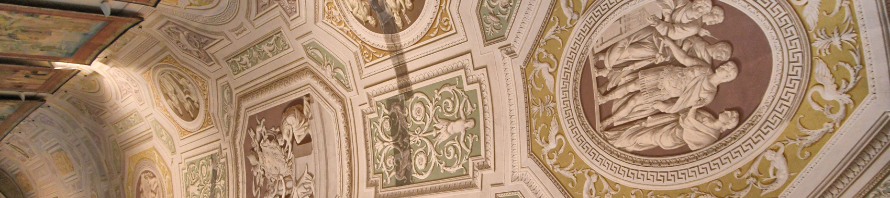

The Palace
The Vatican Museums hold masterpieces of art and history, offering a journey through the spirit of civilizations. To walk here is to meet the stories that shaped humanity.
masterpiece
masterpiece2
- 
Youtube media
Experience the heart of art and spirituality brought to life on screen